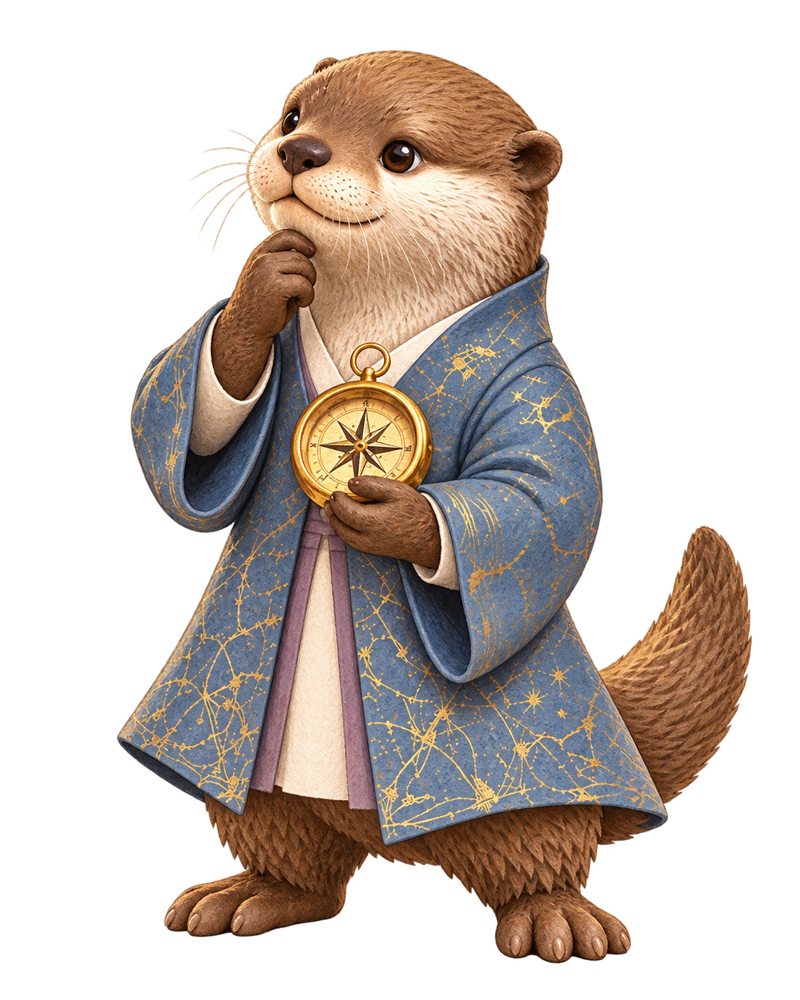

사주보는 수달
오행 결과 · 첫 장
화와 토가두드러지고,금은 비어 있어요
여덟 글자의 기운 지도
원국 여덟 글자 가운데 보이는 오행의 개수
화·토 각 3개, 금 0개
지금의 기운에서,
어떤 이야기가 이어질지
함께 알아봐요.

숫자는 사주 글자의 개수입니다. 많고 적음만으로 좋고 나쁨을 판단하지 않습니다.
사주보는 수달오행 결과 · 둘째 장
二 · 해석
이 기운은
어떻게 읽을까요?
두 번째 장의 내용은 아직 제작하지 않았습니다.
페이지 이동과 디자인 흐름을 확인하는 미리보기입니다.